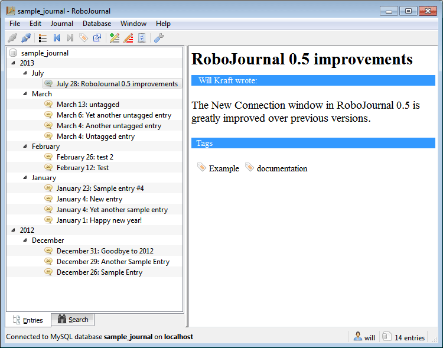
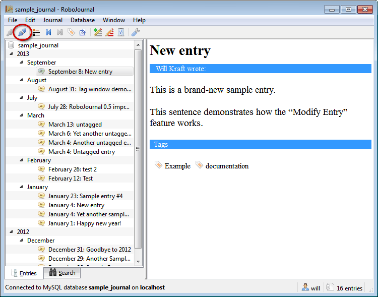
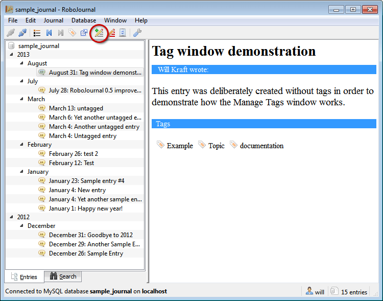
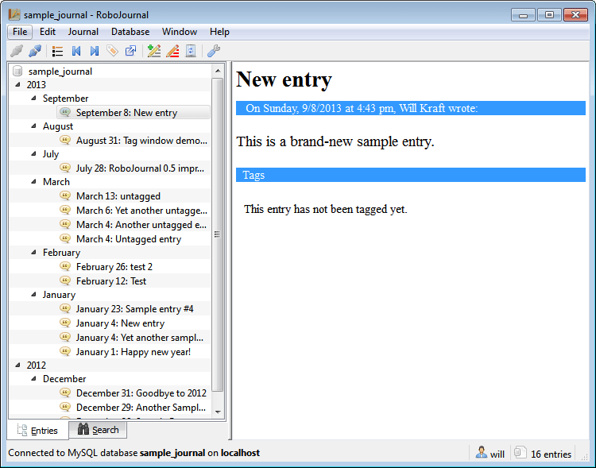
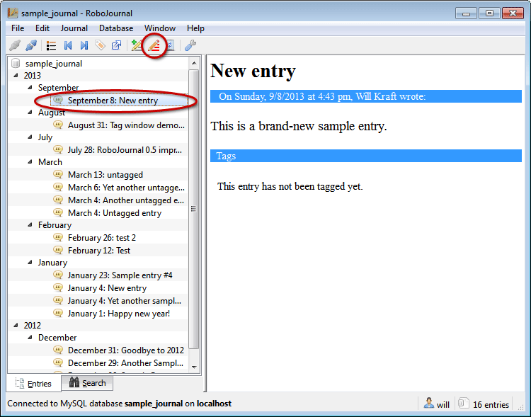
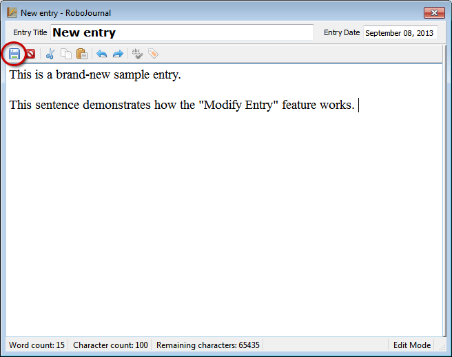
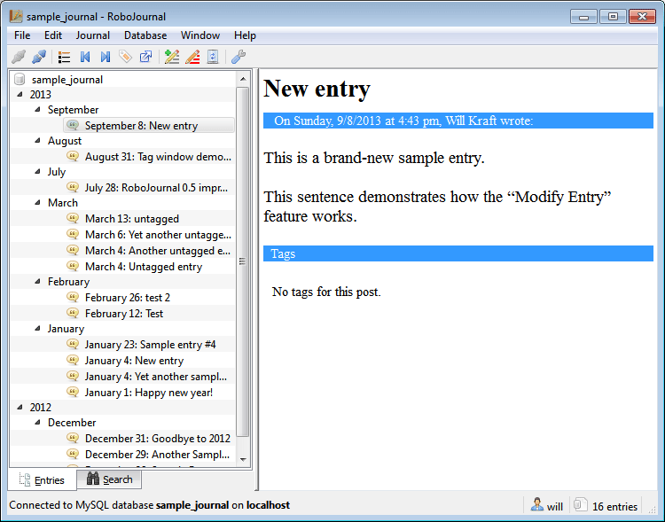
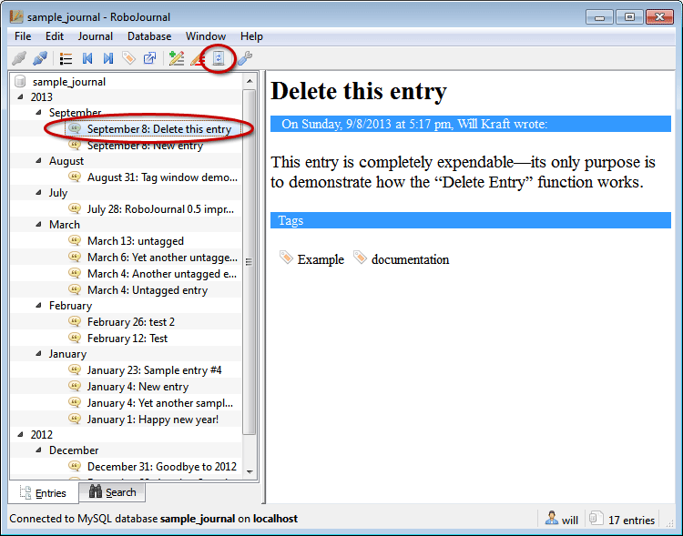
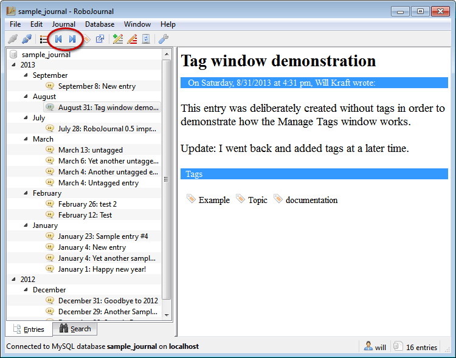
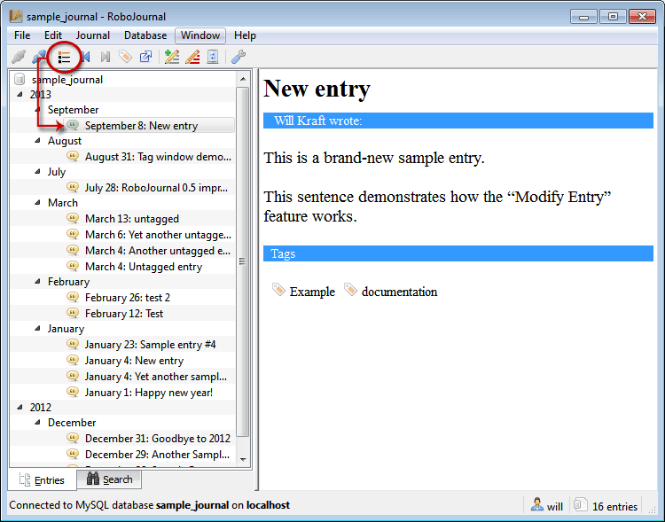

for version 0.4.2
RoboJournal Fundamentals
Sections
- Default State
- Main Window Anatomy
- Making a Connection
- Disconnecting
- Writing a New Entry
- Modifying an Existing Entry
- Deleting an Entry
- Navigating the Chronological Entry List
- Tagging an Entry
- Exporting an Entry
- Searching for an Entry
Default State
RoboJournal is ready for regular day-to-day use once it has been properly configured through first-run mode. When RoboJournal is started under normal conditions, the main window is displayed:
Figure 1: RoboJournal's main window in "Default State".
The initial configuration of the main window (immediately after starting the program) is known as the "Default State" in this documentation. Most of the main window's functionality (except Connect and RoboJournal Preferences) is locked while the program is in the Default State because the locked functions specifically affect the current journal; in other words, there is nothing for these functions to do without an active connection. Therefore, you must make a connection to unlock this functionality.
Main Window Anatomy
On a superficial level, RoboJournal's main window consists of two
large
areas bifurcated by a movable splitter object. The Chronological Entry
List
(Item 12 in Figure 2) is always located on the left side of the
splitter while
the Entry Output Pane (Item 18) is always on the right. The rest of the
window
contains a movable toolbar, a status bar, and the standard drop-down
File,
Edit, etc. menus common to most Windows programs.
RoboJournal's toolbar can be docked on the left, right, or top margin of the main window. The toolbar cannot be free-floated or discarded (although it can be temporarily hidden by selecting the appropriate option in the Show sub-menu on the Window drop-down menu). You can change the location of the toolbar by dragging the toolbar docking widget to the position where you want the toolbar to be or by selecting the desired position from the Toolbar position sub-menu on the Window drop-down menu. For ease of identification, the toolbar docking widget is always on the far left side of the toolbar or on the very top if the toolbar is currently docked vertically (the docking widget's appearance may vary by operating system). Your mouse pointer changes to a four-directional arrow while it is hovering over the toolbar docking widget. The layout automatically adjusts once the toolbar has been moved to a new location. Be advised that moving the toolbar this way is temporary; the only way to permanently change the toolbar orientation is by selecting a different default position in RoboJournal Preferences.
The splitter object separates the Chronological Entry List from the Entry Output Pane and determines how much window space is allocated to each. By default, the splitter divides the RoboJournal main window roughly in half on the vertical axis, regardless of window size. If desired, you can drag the splitter bar left or right to shrink or grow the sizes of the Chronological Entry List and the Entry Output Pane. Moving the splitter all the way left or all the way right collapses the object on that side, rendering it invisible. The remaining object expands to fill the entire horizontal axis of the window. If you move the splitter bar to a new location, RoboJournal saves the coordinates and automatically applies them to future sessions. RoboJournal reverts the splitter to the default position if the saved coordinate data becomes unavailable for some reason.
The following diagram and table provide a complete explanation of each element in the main window layout. Each numbered item in Figure 2 corresponds to the table row bearing the same number:
Figure 2: RoboJournal main window elements identified by number (the toolbar has been docked to the left for more convenient numbering).
| 1. | Connect toolbar button — Establishes a connection to a journal database. |
| 2. | Disconnect toolbar button — Terminates the current connection. |
| 3. | Latest toolbar button — Causes RoboJournal to jump to the most recent entry in the Chronological Entry List. |
| 4. | Previous Entry toolbar button — Displays the entry immediately before the currently-selected item in the Chronological Entry List (if possible). |
| 5. | Next Entry toolbar button — Displays the entry immediately after the currently-selected item in the Chronological Entry List (if possible). |
| 6. | Manage Tags toolbar button — Launches the Manage Tags dialog (affecting the currently-selected entry in the Chronological Entry List). |
| 7. | Export Content toolbar button — Displays the Entry Exporter dialog (affecting the currently-selected entry in the Chronological Entry List). |
| 8. | Write in Journal toolbar button — Launches the Editor dialog in "Write" (new entry) mode. |
| 9. | Modify Entry toolbar button — Launches the Editor dialog in "Edit" mode (affecting the currently-selected entry in the Chronological Entry List). |
| 10. | Delete Entry toolbar button— Deletes the currently-selected entry in the Chronological Entry List. |
| 11. | RoboJournal Preferences toolbar button — Displays the RoboJournal Preferences dialog. |
| 12. | Chronological Entry List — Displays entries (in the current range) from the current journal in chronological order from newest to oldest using a hierarchical tree format. Entries are usually grouped by the year and month in which they were created. |
| 13. | Entries tab — Clicking this tab causes RoboJournal to display the Chronological Entry List on the left side of the main window splitter. |
| 14. | Connection Indicator — This text provides information about the current connection (i.e. the database type, the database name, and the host on which the database is located). |
| 15. | Search tab — Displays the search interface in the place of the Chronological Entry List on the left side of the main window splitter. |
| 16. | Username Indicator — This field displays the username of the active user. The avatar icon located to the left of the name switches depending on the user's gender. |
| 17. | Entry Count/Entry Range Indicator
— The Entry Count displays the number of entries in the current journal
OR the number of entries in the allotted range (if a year range has
been set in RoboJournal Preferences). The Entry Count displays the
total number of entries in the journal if there is no entry range set.
The Entry Range Indicator is displayed if an entry limit has been set and you have decided to display the entry range indicator. For instance, means that RoboJournal is displaying six entries made over the course of two years. |
| 18. | Entry Output Pane — This large area is used to display the currently-selected entry in the Chronological Entry List or in the search results. RoboJournal is able to store separate entries for the Entries and Search tabs simultaneously but each tab can only display one entry at a time in the Output Pane. |
| 19. | Tag List — This is where RoboJournal displays the tags assigned to the current entry. This list reads, "This entry has not been tagged yet" if there is no tag data available for the entry. If the entry was tagged previously and the tag data later removed, this list reads, "No tag data for this entry". |
| 20. | Tab Header — This is used to visually separate the Tag List from the Entry Body. |
| 21. | Entry Body — This term refers to the entirety of the text in each entry. The Entry Body is usually of a different length for each entry. RoboJournal forbids a zero-length Entry Body. |
| 22. | Entry Header — This term refers to the area that stores the date and timestamp of when the entry was made. It also displays the user's full name and the day of week the entry was made (if those features are enabled). |
| 23. | Entry Title — This is the title of the current entry. The size of this element is relative to the text size you have selected for the Entry Body text. |
Making a Connection
You must initiate a new connection before you can work with a journal. A connection creates a persistent link between the RoboJournal interface and the database you are currently working with. As such, all actions initiated during the session only affect the journal you are currently connected to. RoboJournal only supports one connection at a time; you must run multiple instances of RoboJournal if you need to work with more than one journal simultaneously.
The following procedure establishes a new connection:
- Click the Connect toolbar button (indicated by the small red circle in Figure 3).
- The New Connection dialog is displayed:Figure 3: New Connection Dialog
(in MySQL mode).
FYI: The Host, Database, and Username fields on the New Connection dialog are automatically populated with default values if the Always suggest default values option is enabled in the RoboJournal Preferences window. You can temporarily override this functionality by unchecking the Use default host/database and Use default user account checkboxes on the New Connection dialog.
After doing so, the Host, Database, and Username fields are cleared and made writable so you can enter your own values. This override is only effective for the current session; the next connection automatically reverts back to the default values. You must edit the default settings if you wish to make your override values permanent.
Every text field in the New Connection dialog is automatically blank and writable if RoboJournal is not configured to suggest default values. - Enter the appropriate password into the Password field (indicated by the large oval in Figure 3). The contents of the Password field are always obscured for security reasons.
- Click the OK button to continue.
Figure 4: RoboJournal main window in Connected Mode.
RoboJournal attempts to make the connection using the values you provided once you have clicked the OK button in the New Connection dialog. Successfully establishing a connection takes RoboJournal out of Default State and causes it to enter Connected Mode (as shown in Figure 4). All previously-locked program functionality becomes available while RoboJournal is in Connected Mode. However, the Connect button is locked during this time because it is currently impossible to have multiple connections in a single instance of RoboJournal.
In RoboJournal version 0.4.1 (or newer), RoboJournal displays the Tag Reminder window immediately after login if your journal contains any untagged entries. You are required to tag the entries in the list or close the Tag Reminder window before you can access the rest of your journal.
Disconnecting
You can disconnect at any time while RoboJournal is in Connected Mode. Disconnecting returns RoboJournal to a condition very similar to Default State. Once you have disconnected, you can make another connection or quit the program.
Click the Disconnect toolbar button (indicated by the red circle in Figure 5) to proceed:
Figure 5: The Disconnect toolbar button immediately terminates the current connection.
Writing a New Entry
You can write a new entry at any time once RoboJournal is in Connected Mode. Each entry is represented by a node in the Chronological Entry List. Unlike day, month, or year-level nodes, entry-level nodes are marked with an icon and have no subordinate nodes.
Whenever you create a new entry, RoboJournal automatically keeps track of the date and time for the new record. This allows you to focus entirely on the new entry's content. RoboJournal automatically assigns a unique identification number (not shown in the user interface) to each entry to prevent conflicts between two or more entries with the same title and/or body text. This identification number is never used more than once in the same journal. There is a theoretical limit to how many entries a MySQL-based journal may contain but the number is so large (within the billions) that nobody ever comes close to reaching it. Therefore, feel free to write as often as you want.
The following procedure adds a new entry to the current journal:
- Click the Write in Journal toolbar button on the RoboJournal main window.Figure 6: Click the Write in Journal button (indicated in red).
- The Editor dialog is displayed:
 Figure 7: RoboJournal Editor dialog
in Write (new entry) Mode.
Figure 7: RoboJournal Editor dialog
in Write (new entry) Mode. - Enter a title for this entry in the Entry Title field.
- Write the body text for this entry in the large text area.
FYI: The Character count and Remaining characters values indicate how much longer the body text may be (MySQL allows up to 65,535 characters). If the Remaining characters value is negative, RoboJournal prevents you from saving the entry until this value is greater than or equal to zero.
- When finished, click the Save this Entry button (indicated by the circled toolbar icon in the following screenshot):Figure 8: The Save this Entry toolbar button (button labels have been disabled in RoboJournal Preferences).
- RoboJournal displays a confirmation message ("entry_title" was successfully added to your journal) if the save was successful.
- The new entry is added to the Chronological Entry List. If desired, you may click on the new entry to display its contents in the Entry Output Pane:Figure 9: The new entry is displayed in the Chronological Entry List.
Modifying an Existing Entry
The Editor dialog allows you to modify existing entries after they have been saved to the journal database. You may change the title and body text in any way you see fit. However, RoboJournal prevents you from changing the date because that often creates problems with the rest of the database. Any special characters/conditions in the entry text that are affected by post-processing (e.g. ellipsis characters, dashes, smart quotes, etc.) revert to their original state during the editing session in order to make them easier to work with. All applicable post-processing features are automatically re-applied after the changes have been saved.
The following procedure allows you to change an existing entry:
- Select the entry that is to be modified by clicking on its node in the Chronological Entry List (as shown in the large red oval in Figure 10). Figure 10: Selecting the entry to be modified.
- Click the Modify Entry toolbar button (indicated by the small red circle in Figure 10). You can visually distinguish the Modify Entry button from the Write in Journal button by the Modify Entry button's orange pencil color, its central position in the button group, and its horizontal red lines.
- The Editor window is displayed with the entry data pre-loaded into the appropriate fields:Figure 11: Existing entry text loaded into Editor (in Edit Mode).
- Make all necessary changes.
- Click the Save Changes toolbar button (indicated by the red circle in Figure 12) to commit your changes to the database. The Save Changes button replaces the Save this Entry toolbar button while the Editor dialog is in Edit Mode. If you wish to cancel your edits, you can click the Discard Changes button (located to the immediate right of the Save Changes button) to return to the main window.Figure 12: Saving changes once the edits are complete.
- A confirmation message ("entry_title" was successfully updated.) is displayed if RoboJournal was able to save the entry successfully. Otherwise, RoboJournal displays a message explaining what went wrong. In either case, click the OK button in the dialog to continue.
- If the save was successful, the updated entry is displayed in the Entry Output Pane on the RoboJournal main window. Figure 13: The updated entry is shown immediately after the edit process is completed.
Deleting an Entry
RoboJournal's delete function provides a way to easily remove the currently selected entry from the database. You should always exercise caution when using this feature because delete operations are permanent. The only way to undo an accidental deletion is to restore an earlier version of the journal that contains the lost data from a backup.
- Select the entry to be deleted by clicking on its node in the Chronological Entry List (shown in the large oval area in Figure 14).
- Click the Delete Entry toolbar button (indicated by the small circle in Figure 14). Figure 14: Select the entry you wish to delete and click the Delete Entry button.
- A confirmation dialog is displayed as a safety measure. This
dialog is your last opportunity to cancel the delete operation. Click
the OK button to approve the delete operation or
click the Cancel button to abort. Figure 15: A
confirmation dialog is displayed if safety protocols are enabled. This
is your last chance to abort.
FYI: RoboJournal skips Step 3 if the Always Show Confirmation Dialogs option is disabled in RoboJournal Preferences. In such cases, the delete operation is instantaneous and provides no chance to abort even if you click the Delete Entry toolbar button accidentally! You should treat the Delete Entry function with extreme caution if confirmation dialogs have been disabled.
- You are returned to the main window regardless of your decision in the previous step. If you chose to continue with the delete operation, the previously-selected entry is now gone: Figure 16: The entry you deleted is no longer displayed in the Chronological Entry List.
Navigating the Chronological Entry List
All entries in the current journal are displayed in ascending chronological order; the newest entry is always the first on the list while the oldest entry (in the current range) is on the very bottom. RoboJournal has convenient ways to browse adjacent entries in the current journal if you wish to read it in a chronological fashion. This is accomplished by clicking the Previous Entry and Next Entry toolbar buttons on the RoboJournal main window:Figure 17: The Previous Entry and Next Entry buttons allow easy sequential browsing.
Clicking the Next Entry or the Previous Entry toolbar button increments or decrements the current entry by one record. The focused (selected) entry in the Chronological Entry List automatically jumps to the appropriate adjacent record whenever the entry is changed this way. If there is no record available before or after the current entry because you are viewing the oldest or newest entry, the affected button locks to indicate that further browsing in that direction is impossible (as shown in Figure 18 where the Next Entry button is locked because the latest entry is already being displayed).
You can use the Latest Entry toolbar button (indicated by the red circle in Figure 18) to immediately jump to the most recent entry in the database:Figure 18: You can use the Latest Entry button to display the newest entry at any time. RoboJournal can also be configured to display the latest entry by default.
Tagging an Entry
Refer to the "Working With Tags" documentation.
Exporting an Entry
Refer to the "Exporting Journal Entries" documentation.
Searching for an Entry
Refer to the "Using the Search Function" documentation.
Copyright © 2013 by Will Kraft. All parts of the RoboJournal Documentation are covered by the terms of the GNU Free Documentation License.